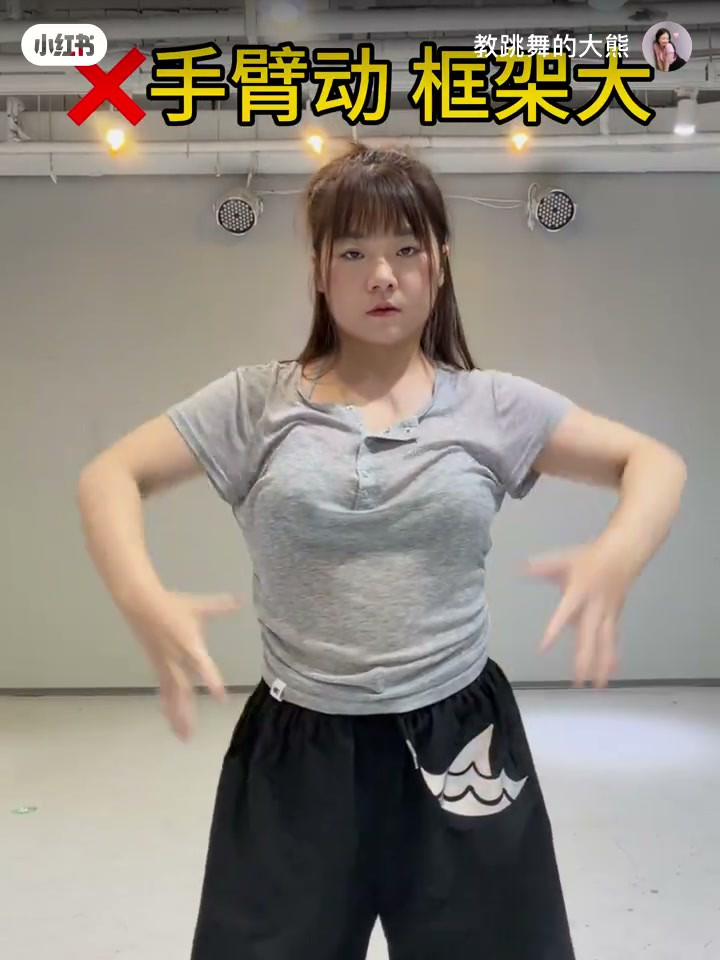
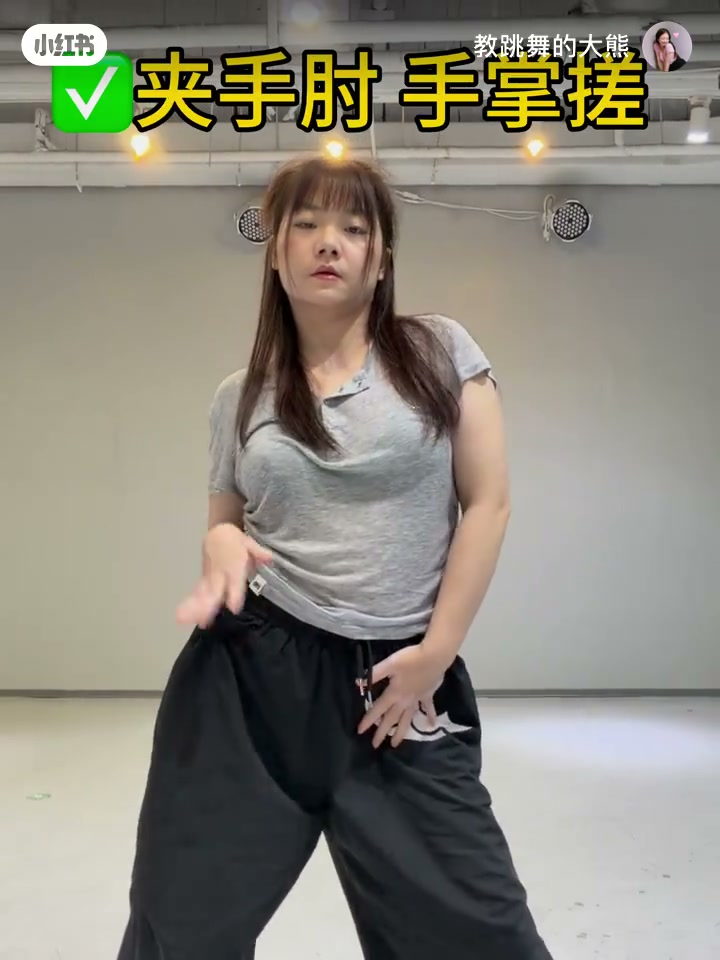
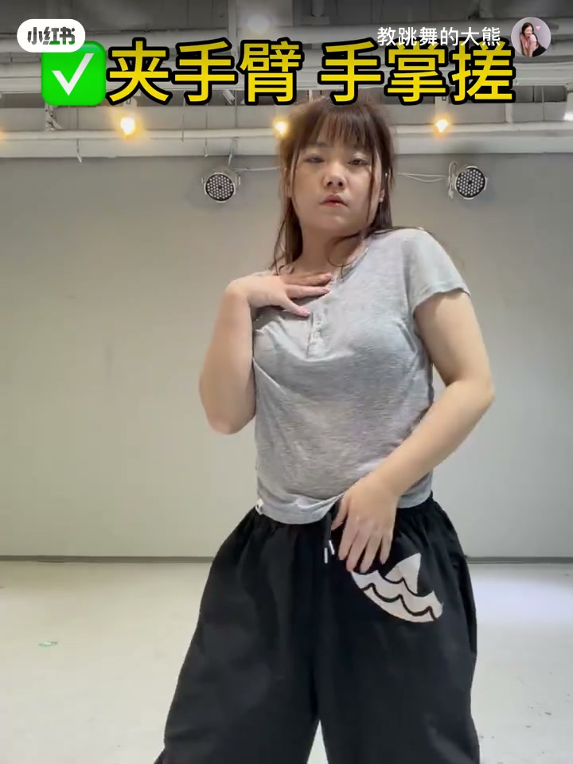
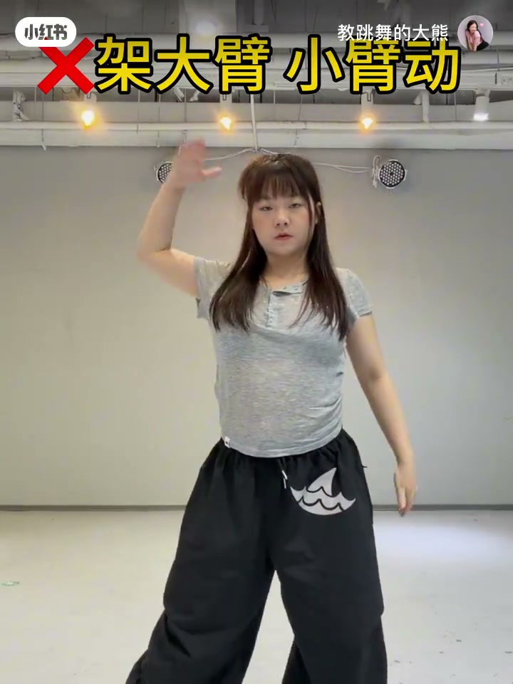

内容要点
知识结构
[00:00→00:20]
大框架问题
对照文案：动作一味求大，舞感反而空。
[00:20→00:40]
改小示范
同一动作收小幅度，线条更清楚。
[00:40→00:54]
观感对比
小而干净的动作更容易显舞感。
总结
舞感来自控制与细节，不是框架越大越好。
Whisper 无有效口播文本；章节依文案与画面重建。
图文实录
问题：大框架幻觉
00:00 – 00:20
开场示范偏大的动作路径，对应文案「所有动作都追求大框架」的诊断。

[00:07]开场：一味求大的动作框架
Opening: oversized movement frames
改小：控制优先
00:20 – 00:40
中段把同一类动作收小，强调关节控制与节奏停顿，让线条可读。

[00:20]把动作做小：控制与停顿出现
Make moves smaller: control and pauses appear

[00:34]细节特写：小动作里的路线更清晰
Detail shot: pathways read clearer in small moves
结论：小更好看
00:40 – 00:54
收束强化标题命题：越小越好看——在可控范围内做满细节，比空洞的大动作更有舞感。

[00:47]收束：小而干净反而更好看
Close: small and clean can look better